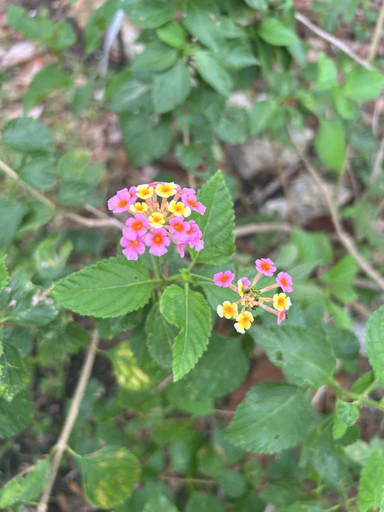

- One of the world's most invasive plants — listed among the 100 worst invasive species globally by the IUCN. Also one of the most productive butterfly nectar plants in Florida. Both of these things are true simultaneously, and that tension is the story.
- The FISC lists Florida's Lantana camara as a Category I invasive. This species, L. strigocamara, is closely related and similarly aggressive. The green berries are toxic to livestock and children; the ripe purple-black berries are edible to birds and are how the plant spreads.
- The flower clusters change color as they age — yellow to orange to pink to red — all on the same plant at once. The color change signals pollination status to insects.
- The invasive risk and the butterfly value are genuinely in tension. Context determines how to weigh them.
- The flower color change is a direct signal to pollinators: yellow flowers are fresh and nectar-rich, red flowers are spent. Butterflies learn quickly to skip the red and head for the yellow. Watch them work a cluster and you will see the preference in action.
Non-native. Origin complex — the ornamental Lantana camara group is a hybrid complex derived from multiple Caribbean and South American species. Now naturalized and invasive throughout the world's tropics and subtropics. Member of Verbenaceae.
- A note for local gardeners: the invasive concern applies specifically to wild-type Lantana (L. strigocamara) which produces viable seeds spread by birds. The sterile cultivated hybrids widely sold at Bradenton nurseries — trailing purple varieties, New Gold, and similar cultivars — do not produce viable seeds and carry none of the invasive risk.
- If you want the butterfly value without the ecological concern, ask for a sterile hybrid.
- At the park, Lantana grows in several spots, does its job as a butterfly plant, and makes no demands. Common, reliable, and completely unbothered.
One of the highest-value butterfly nectar plants available in Florida — used by dozens of butterfly species. The flower color change from yellow to red signals to butterflies that yellow flowers are freshly open and nectar-bearing; red flowers have been pollinated and nectar is spent. Butterflies learn to select yellow flowers.
The ripe purple-black berries are eaten by birds, which disperse seeds widely. The unripe green berries are toxic. This is the mechanism of invasive spread — birds carry seeds from gardens into natural areas.
Small, tubular, in rounded clusters. Each cluster contains flowers of multiple ages and therefore multiple colors simultaneously — yellow, orange, pink, and red on one cluster.
Small, round, green ripening to purple-black. Green berries toxic; ripe berries eaten by birds.
Rough, opposite, strongly aromatic when crushed. The scent is distinctive and not universally liked.
Sprawling to mounding shrub, variable height. Aggressive grower.
The multi-colored flower clusters — multiple colors simultaneously on one head — are the most reliable ID feature. The strongly aromatic rough-textured leaves confirm it. The green and purple-black fruit together on the same plant.
The ripe purple-black berries are edible, but the green unripe berries are toxic and must never be eaten.
They contain lantadene compounds that cause liver damage and photosensitivity, and children have been seriously harmed.
Keep children away from unripe fruit.
Green berries are especially dangerous to dogs and cats for the same reason; ripe berries are less so, but any ingestion of plant material warrants a call to your vet.
Keep pets from grazing on the plant.

- © Denise Sosa (CC-BY-NC), via iNaturalist